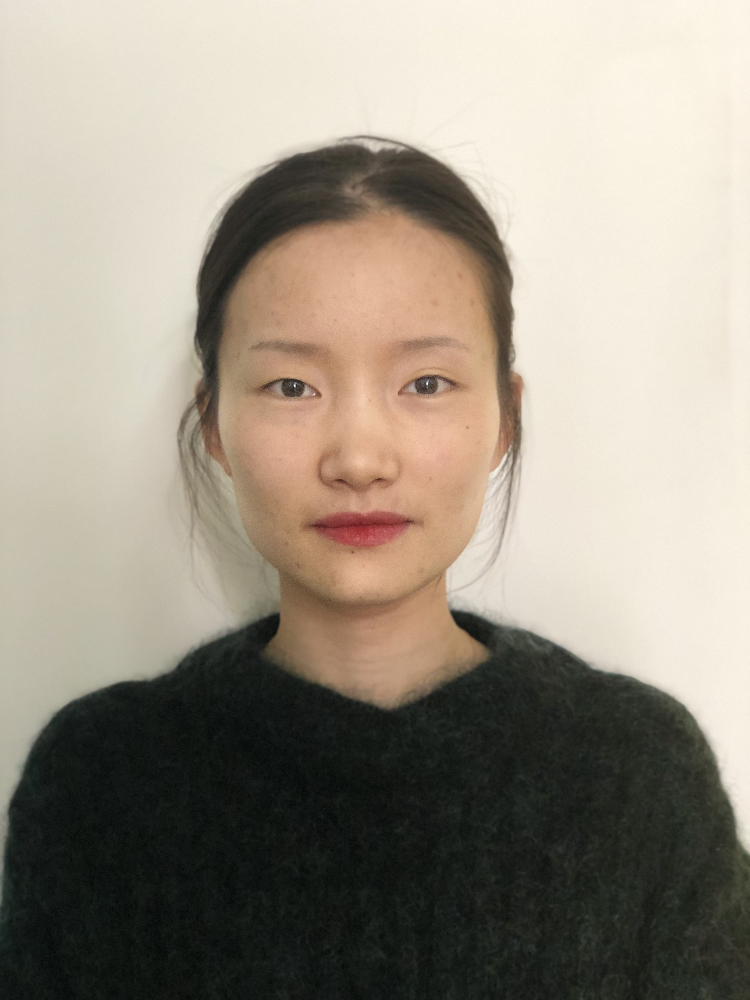

Xinyi Xu
|  |
Xinyi Xu, Ph.D. candidate |

Short Biography
I am a Ph.D. candidate in School of Electronic Engineering at Xidian University. My advisor is Dr. Cheng Deng. My research intersts include computer vision, deep learning, and machine learning. I am currently a visiting scholar at DIVE Lab with Dr. Shuiwang Ji, Texas A&M University.
Research Interests
-
Deep metric learning
-
Computer vision
-
Deep learning
Education
-
Ph.D., Computer Science, Xidian University, Spring 2016 - Present
-
M.S., Electronic Engineering, Xidian University, September 2014 - Spring 2016
-
B.S., Electronic Science and Technology, Xidian University, September 2010 - July 2014
Publication(s)
Conference Paper(s)
-
Xinyi Xu, Huanhuan Cao, Yanhua Yang, Erkun Yang, Cheng Deng
Zero-shot Metric Learning
Proceedings of the 28th International Joint Conference on Artificial Intelligence (IJCAI), 3996-4002, 2019
[Paper] -
Xinyi Xu, Yanhua Yang, Cheng Deng, Feng Zheng
Deep Asymmetric Metric Learning via Rich Relationship Mining
Proceedings of the IEEE Conference on Computer Vision and Pattern Recognition (CVPR), 4076-4085, 2019
[Paper] -
Pu Chen, Xinyi Xu, Cheng Deng
Deep View-Aware Metric Learning for Person Re-Identification
Proceedings of the 27th International Joint Conference on Artificial Intelligence (IJCAI), 620-626, 2018
[Paper]
Jourbal Article(s)
-
Xinyi Xu, Cheng Deng, Feiping Nie
Adaptive Graph Weighting for Multi-view Dimensionality Reduction
Signal Processing (SP), 165: 186-196, 2019
[Paper]